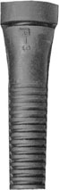

Kent K-3

Number: K-3
Length from Groove: 3-1/4"5"
Hole Size: 3/4"
Cross Refernce Numbers:
Hand Pickers, Pickwick, 5-Th, Mohr H-3, Wk21, L-B1.
US and Canada 1-800-521-4886
- Made In USA
- USDA Approved
- Made To Order
- Assured Freshness
- Sealed In Plastic Bags
- Available In Custom Hardness
- Custom Durometers Available
Fabricated in Chicago and shipped directly from Calumet Rubber Co., for over three generations since 1944.